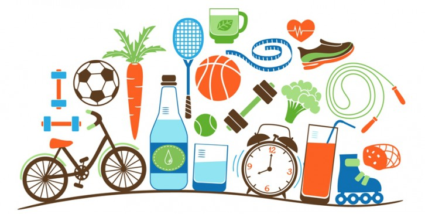

HABITOS DE UNA VIDA SALUDABLE

Los buenos hábitos de salud pueden permitirle evitar una enfermedad y mejorar su calidad de vida. Las siguientes medidas le ayudarán a sentirse y vivir mejor.
- Hacer ejercicio en forma regular y controlar el peso.
- No fumar.
- NO tomar mucho alcohol y evitarlo por completo en caso de tener antecedentes de alcoholismo.
- Utilizar los medicamentos recomendados por su proveedor de atención médica según las instrucciones.
- Consumir una dieta saludable y equilibrada.
- Cuidar los dientes.
- Controlar la hipertensión arterial.
- Seguir buenas prácticas de seguridad.
A continuacion algunos consejos recomendados para poder llevar una vida SALUDABLE
- Buen desayuno cada mañana: Recuerda que el desayuno es la primera comida del día tras un largo período en el que el cuerpo no ha recibido nutrientes. No desayunes deprisa ni cosas rápidas y precocinadas. Tomaos el tiempo para comer bien: frutas, verduras, pan, lácteos.
- Comer en familia: Disfrutar de al menos una comida en familia es esencial para que los niños incorporen nuevos alimentos. Como siempre decimos, tú eres el ejemplo que ellos seguirán.
- Comprar alimentos saludables:La mejor manera de cambiar de dieta y preparar un menú equilibrado cada semana es ¡evitar las tentaciones! Ve a comprar al supermercado cuando no tengas hambre y escoge principalmente alimentos sanos, aquellos que conforman la base de la pirámide.
- Evitar la televisión y la tecnología en general durante las comidas:Los niños que comen mirando dibujos animados no prestan atención a lo que ingieren, ni en calidad ni en cantidad.
- Beber suficiente líquido: El cuerpo necesita hidratación para funcionar correctamente. La bebida de preferencia debe ser siempre agua, aunque por supuesto puedes disfrutar de otras bebidas con moderación.
- Incluir la actividad física dentro de la rutina diaria: Jugar, correr, saltar, pasear, andar en bicicleta son actividades que los niños deberían realizar cada día. ¡Acompáñalos!
- Limitar las actividades sedentarias como jugar a videojuegos o mirar la televisión: Cambia estas actividades por otras más activas como, por ejemplo, pasear al perro o ¡limpiar la casa!
- Elegir verduras y frutas como snacks: Cuando los niños tengan hambre ofréceles tomates cherry, mini zanahorias, manzanas o cualquier otra fruta en lugar de bollería.
- Comer despacio:Masticar bien es importante para una buena digestión y, además, le da el tiempo necesario al organismo para determinar si está satisfecho o no.
- Cocinar con los niños: Deja que tus hijos participen en la elaboración de las comidas, de esta manera les permitirás conocer alimentos e involucrarse con la comida.
- Evitar el exceso de fritos y grasas.
- Prepara un huerto en casa: Los niños aprenderán a cultivar y se involucrarán en la preparación de alimentos saludables que, además, son mucho más ricos recién sacados de la planta.
Beneficios de una vida saludable
- Mayor longevidad.
- Menor riesgo de enfermedades crónicas como enfermedades cardíacas, diabetes y algunas formas de cáncer.
- Mayor bienestar físico y mental.
- Mejor calidad de vida.
- Consumir una dieta saludable y equilibrada.
- Más energía y vitalidad.